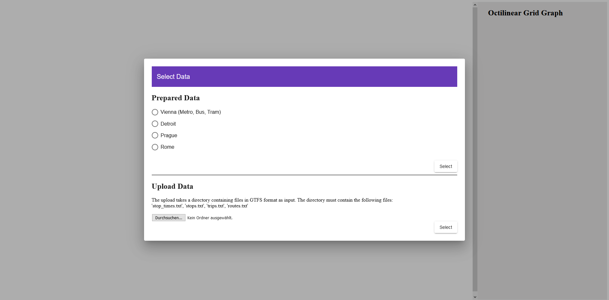
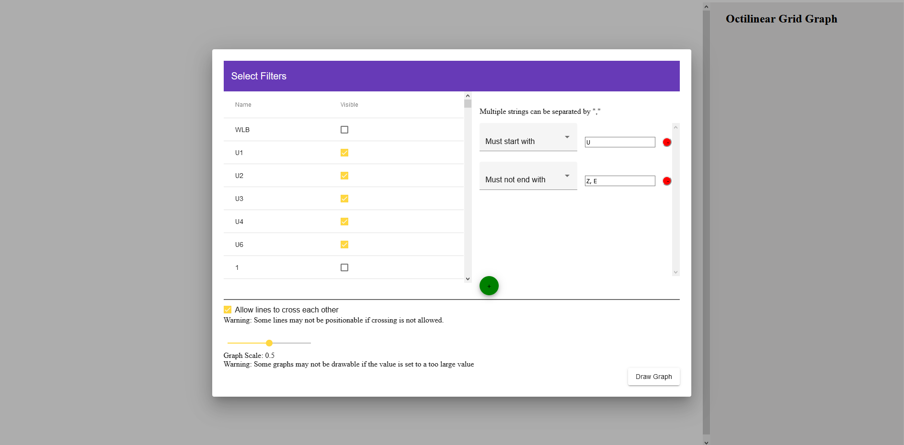
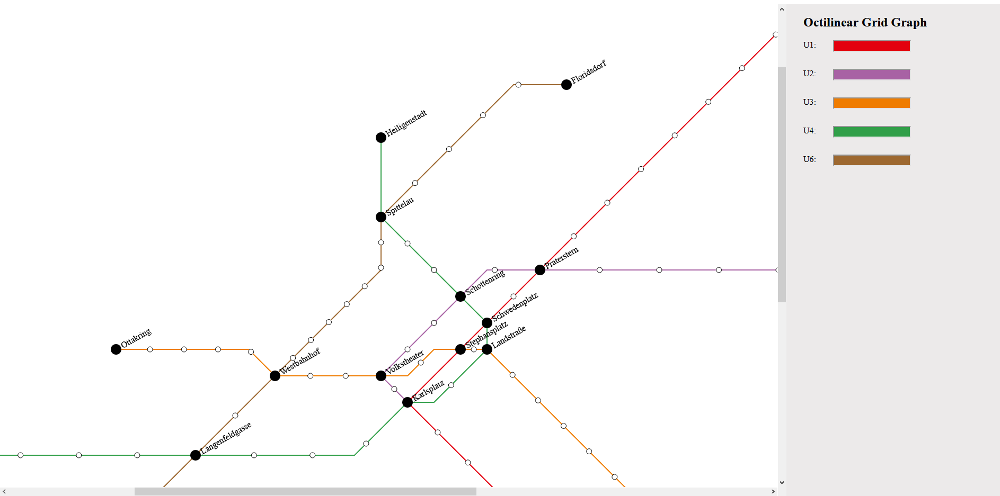

Metro Maps on Octilinear Grid Graphs
By Georg Schenzel 01633078 & Viktoria Pundy 01633403
The paper proposes an algorithm for drawing public transport maps on an octilinear grid graph.
Such a graph allows each edge to be drawn vertically, horizontally or diagonally. Stations are displayed
as nodes of the graph. Our implementation of the algorithm takes data in GTFS-Format as input
and provides a resulting drawing of the contained lines as output.
We provide data of four cities for the graph, however, the users can upload their own files as well.
At the start of the project, the users can choose between four prepared datasets
(Vienna, Rome, Prague and Detroit) as well as upload their own files, which have to be in GTFS format.
Note that the upload and parsing of the data can take some time. Afterwards, the users can choose which lines
should be drawn in the graph as well as set rules regarding the names of the lines. When the lines have been chosen,
the graph is drawn in the browser. On the right side of the window is a list of all lines with their default
colours.
If no colour was specified in the data, the colour is set to black. With a click on the colour bar, the colour can
be adjusted for each line individually.
UI

In the first window, the users can choose either one of the four prepared datasets or upload
their own files in GTFS
format.
Note that the upload of files can take some time.

In the second window, the user can choose which lines should be drawn in the graph. The lines
can be chosen individually
in the list on the left. Additionally, the user can establish rules about the names of the lines which should be
selected. The user
can choose how the names should start, should not start, should end and should not end. Additionally, a certain type of
transport can be selected. Multiple strings can be
separated by a comma.
At the bottom, the user can choose if lines are allowed to cross each other in the graph and set the scale of
the drawn graph.

Afterwards the graph is drawn in the browser window. On the right is a list with the drawn lines. Each line has a
color
bar. Clicking on the bar reveals a colour picker with which the colour of the according line can be changed.
When hovering over the graph elements, the name of the lines and the stations are shown.
Implementation Details
The algorithm was implemented with TypeScript and Angular. The drawing of
the graph is done with the library d3.js
Links